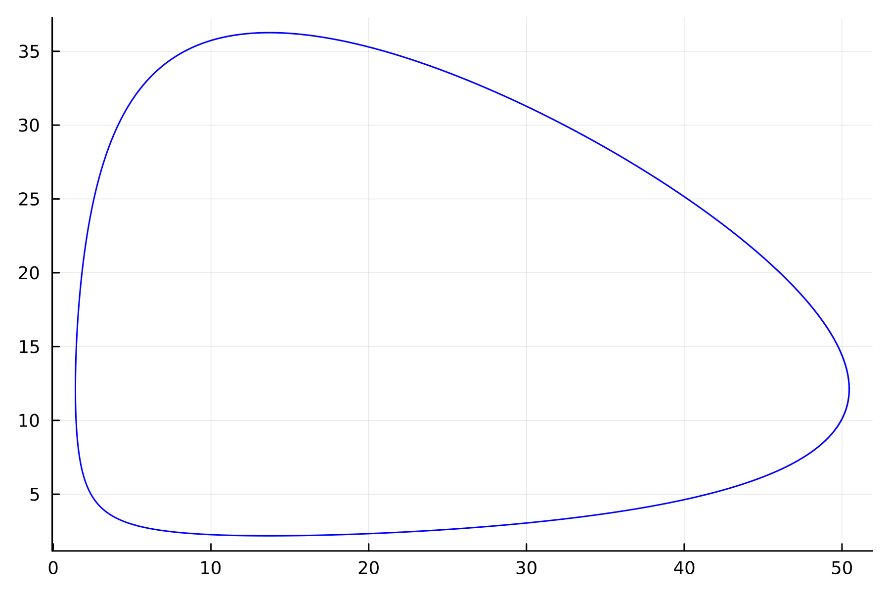
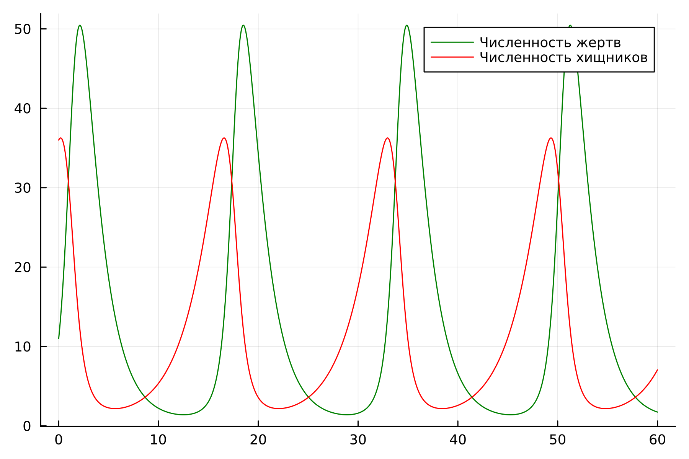
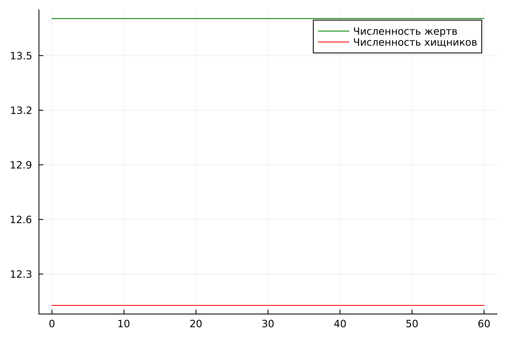
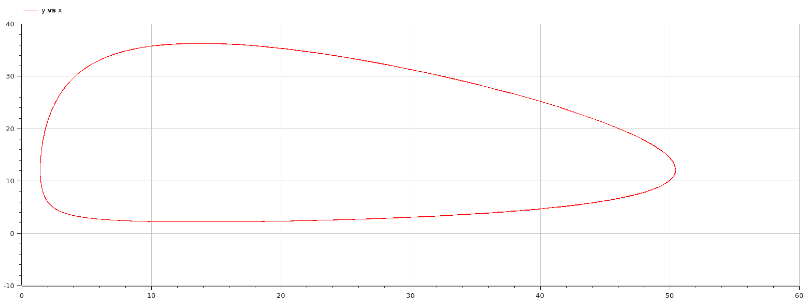
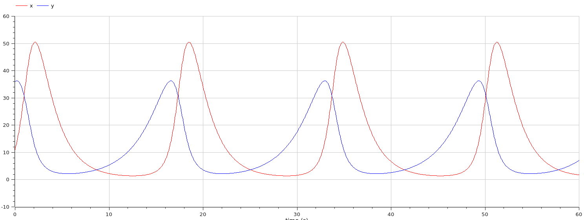
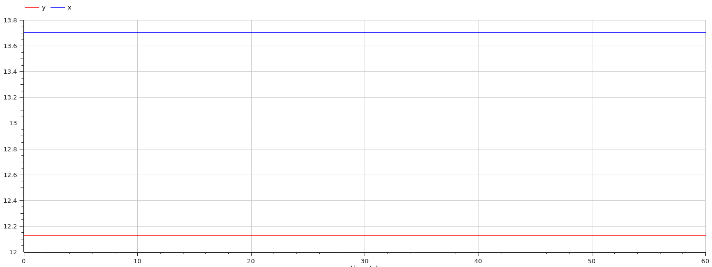

Целью данной работы является построение модели хищник-жертва.
Задание
Для модели «хищник-жертва»:
Постройте график зависимости численности хищников от численности
жертв
Графики изменения численности хищников и численности жертв при
следующих начальных условия x0 = 11, y0 = 36.
Найдите стационарное состояние системы.
Выполнение
Выполнение
Опишем нашу модель на языке Julia, здесь мы задаем систему ДУ и
начальные коеффициенты
functionode_fn(du, u, p, t) x, y = u du[1] =-a*u[1] + b * u[1] * u[2] du[2] = c * u[2] - d * u[1] * u[2]end
Выполнение
Далее создадим график зависимости численности хищников от
численности жертв

График зависимости численности хищников
от численности жертв
Выполнение
И создадим график изменения численности хищников и численности жертв
при начальных условия

График изменения численности хищников и
численности жертв
Выполнение
В стационарном случае (положение равновесия, не зависящее от времени
решение) будет достигаться в точке x0 = c/d
и y0 = a/b.
Давайте пронаблюдаем как будет выглядеть график изменения численности.
Из определения стационарного случая, мы понимаем, что график не будет
изменяться на протяжении всего времени.
Выполнение

График изменения численности хищников и
численности жертв
Выполнение
Перейдем к OpenModelica. Данный код сделает нам нестационарный
случай.
График зависимости будет выглядеть следующим образом, аналогично
тому, что было на языке Julia

График зависимости численности хищников
от численности жертв
Выполнение
График изменения будет выглядеть аналогично тому, что мы строили на
языке Julia.

График изменения численности хищников и
численности жертв
Выполнение
И, наконец, график стационарного случая будет выглядеть ровно также,
как он был на языке Julia

График изменения численности хищников и
численности жертв
Выводы
В итоге проделанной работы мы построили график зависимости
численности хищников от численности жертв, а также графики изменения
численности хищников и численности жертв на языках Julia и
OpenModelica.